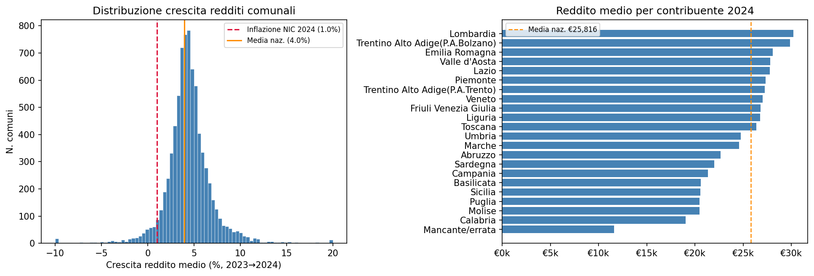
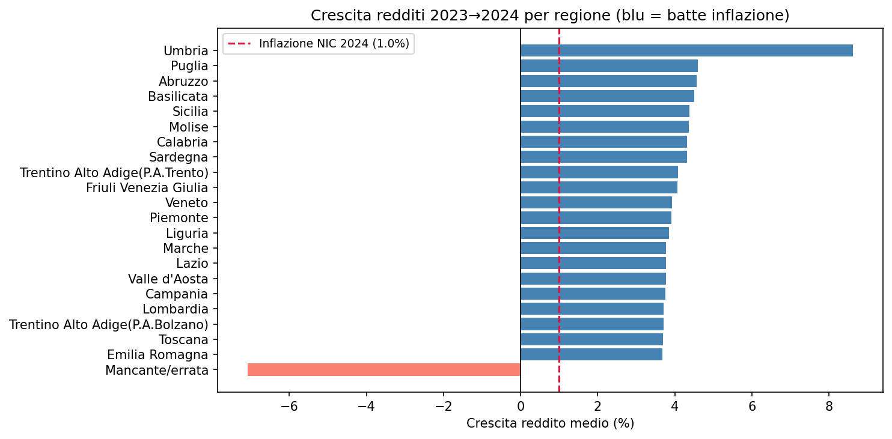
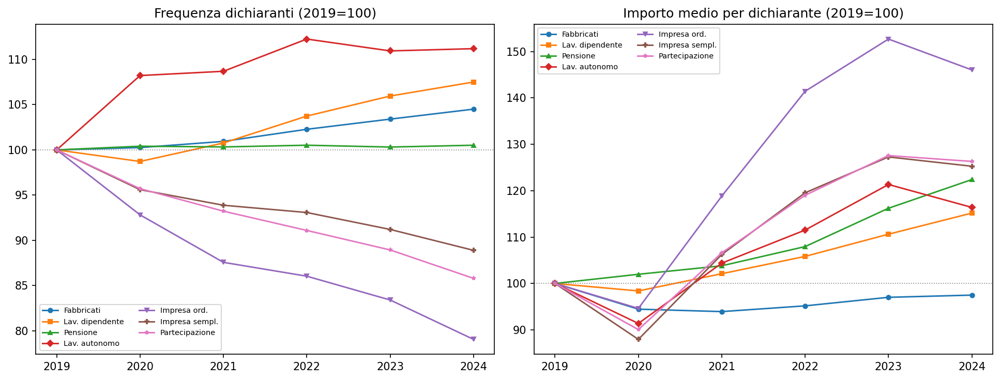
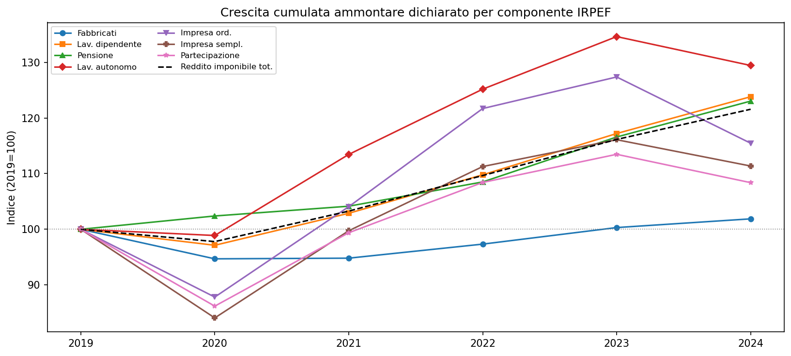
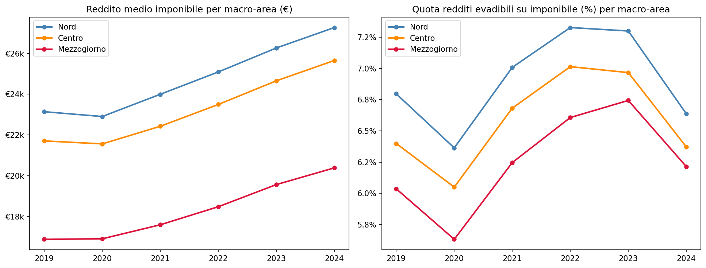
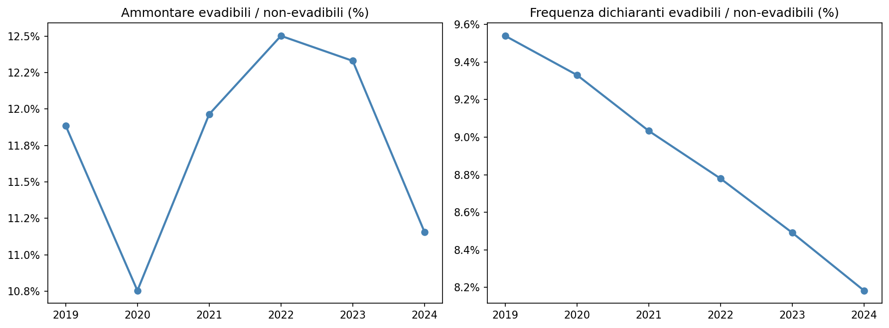
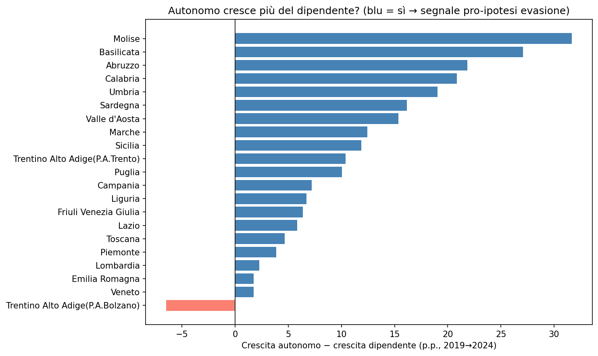

Redditi IRPEF 2024
Distribuzione, crescita e dinamiche strutturali dei redditi dichiarati in Italia
Paolo Volterra ![]()
Analisi dei dati MEF sulle dichiarazioni dei redditi per comune (anno di imposta 2024). Si esaminano la distribuzione geografica della crescita, le dinamiche per categoria di dichiarante, la componente potenzialmente evadibile e il confronto tra redditi da lavoro autonomo e dipendente nel quinquennio 2019–2024.
IRPEF, redditi, comuni, evasione, MEF, 2024
1 Distribuzione comunale e livelli regionali

Distribuzione della crescita del reddito medio comunale (2023→2024) e reddito medio per contribuente per regione (2024)
Il pannello di sinistra mostra la distribuzione dei tassi di crescita del reddito medio per comune tra il 2023 e il 2024. La forma è approssimativamente normale, centrata attorno alla media nazionale del 4,0% (linea arancione), con una coda sinistra che include un piccolo numero di comuni con crescita negativa. La soglia dell’inflazione NIC 2024 (1,0%, linea rossa tratteggiata) viene superata dalla quasi totalità dei comuni: il guadagno di potere d’acquisto è dunque diffuso sul territorio, non circoscritto a pochi centri. La dispersione è però significativa — il range va da circa −12% a +20% — a segnalare che le dinamiche locali riflettono composizioni settoriali e strutture occupazionali molto eterogene.
Il pannello di destra fotografa i livelli assoluti del reddito medio per contribuente nel 2024, aggregati per regione. Lombardia guida la classifica con circa 30.000 € pro-capite, seguita da Trentino-Alto Adige (P.A. Bolzano) ed Emilia-Romagna. La linea tratteggiata arancione marca la media nazionale di € 25.816. Al di sotto si concentrano tutte le regioni del Mezzogiorno: Calabria e Molise si fermano intorno a €19.000–20.000, meno di due terzi del valore lombardo. Il divario Nord-Sud nei redditi dichiarati rimane strutturale e persistente, con un rapporto di circa 1,5 tra i valori estremi della distribuzione.
2 Crescita 2023→2024 per regione

Crescita del reddito medio per contribuente per regione (2023→2024)
Tutte le regioni italiane registrano una crescita del reddito medio superiore all’inflazione NIC 2024 (1,0%, linea rossa tratteggiata), segnale di un incremento reale generalizzato. L’Umbria guida con circa +8,5 p.p., risultato in parte spiegabile con una base di partenza contenuta e una buona performance del settore manifatturiero locale. Seguono Puglia, Abruzzo, Basilicata e Sicilia — tutte regioni meridionali con tassi attorno al +4,5% — a indicare che la crescita nominale è stata più vivace al Sud pur partendo da livelli assoluti più bassi.
Le regioni del Centro-Nord mostrano tassi di crescita più moderati (tra +3,5% e +4%), coerenti con strutture produttive mature e una maggiore incidenza di redditi da lavoro dipendente già elevati. L’unica eccezione negativa riguarda la categoria residuale “Mancante/errata” (barra rosa), che non corrisponde a una realtà territoriale ma a problemi di codifica nel dataset MEF e va ignorata nell’interpretazione sostanziale. Da notare che la convergenza relativa osservata — Sud che cresce più del Nord in termini nominali — non intacca il divario assoluto, data la distanza di partenza nei livelli.
3 Decomposizione per categoria di dichiarante

Frequenza dichiaranti e importo medio per dichiarante per categoria (2019=100)
Il doppio pannello decompone le dichiarazioni IRPEF per categoria di reddito prevalente, con indice base 2019=100, su un orizzonte 2019–2024. Il pannello sinistro traccia l’andamento della frequenza dei dichiaranti: i pensionati mostrano la crescita relativa più sostenuta (+10 punti indice), confermando l’invecchiamento della base contributiva; i lavoratori dipendenti rimangono stabili; i titolari di reddito da impresa ordinaria e semplificata evidenziano una lieve flessione nel 2020 — anno del Covid — seguita da recupero. I partecipanti (soci di società di persone) e il lavoro autonomo mostrano andamenti più volatili.
Il pannello destro misura l’importo medio dichiarato per categoria: qui la dispersione è molto più ampia. L’impresa ordinaria registra la crescita più elevata in termini di reddito medio (+30–35 punti indice al picco del 2023), riflettendo la forte ripresa dei profitti post-pandemia e l’effetto degli incentivi fiscali. Le pensioni crescono in modo regolare ma contenuto. Il lavoro dipendente segue la tendenza media dell’imponibile totale (linea tratteggiata nera). I fabbricati mostrano la performance più debole, fermi quasi al livello del 2019 lungo tutto il periodo, segnale della stagnazione delle rendite catastali nominali.
4 Crescita cumulata per componente IRPEF (2019–2024)

Crescita cumulata dell’ammontare dichiarato per componente IRPEF (2019=100)
Il grafico mostra la crescita cumulata dell’ammontare totale dichiarato per ciascuna componente IRPEF dal 2019 al 2024, con indice 100 = 2019. La componente “Partecipazione” (redditi da partecipazione in società di persone e assimilati) registra la crescita più elevata fino al 2023 (+35 punti circa), poi subisce una netta correzione nel 2024, scendendo a circa +115. Questo andamento riflette la ciclicità dei profitti distribuiti e la normalizzazione post-rimbalzo pandemico.
L’impresa semplificata mostra una curva simile ma meno volatile, con crescita intorno a +25 punti a fine periodo. Il lavoro dipendente e le pensioni seguono traiettorie quasi parallele, entrambe attorno a +22–24 punti cumulati al 2024, in linea con la dinamica salariale e la rivalutazione degli assegni previdenziali. I fabbricati rappresentano l’unica componente sostanzialmente ferma al valore pre-pandemia (+1–2 punti), a conferma della rigidità delle rendite catastali nel breve periodo. La linea tratteggiata (imponibile totale) si colloca coerentemente attorno a +22 punti, media ponderata di tutte le componenti.
5 Dinamiche geografiche: livelli e quota evadibile per macro-area

Reddito medio imponibile e quota redditi evadibili per macro-area (2019–2024)
Il pannello di sinistra conferma il persistente divario geografico nei livelli: il Nord parte da circa €23.000 nel 2019 e raggiunge quasi €27.000 nel 2024, con crescita regolare e senza interruzioni significative nemmeno nel 2020. Il Centro passa da circa €21.800 a €25.500. Il Mezzogiorno parte da €17.000 e arriva a €20.500: la crescita assoluta è inferiore, ma il tasso di variazione percentuale è comparabile, segnalando una convergenza nominale molto lenta.
Il pannello di destra è più informativo dal punto di vista analitico: misura la quota dei redditi potenzialmente evadibili (lavoro autonomo, impresa, partecipazione) sull’imponibile totale per macro-area. Il Nord mostra la quota più elevata (attorno al 6,8–7,3%), seguito dal Centro (6,3–7,0%) e dal Mezzogiorno (6,0–6,8%). Il picco comune nel 2022–2023 riflette probabilmente la ripresa dei redditi d’impresa dopo il Covid e i sostegni pubblici. La convergenza verso il basso nel 2024 per tutte e tre le aree suggerisce una normalizzazione strutturale, possibilmente associata anche all’efficacia delle misure di contrasto all’evasione (fatturazione elettronica, ISA, concordato preventivo biennale).
6 Ratio evadibili / non-evadibili (aggregato nazionale)

Rapporto tra redditi evadibili e non-evadibili per ammontare e frequenza (2019–2024)
I due pannelli misurano il rapporto tra la componente evadibile (lavoro autonomo, impresa, partecipazione) e quella non-evadibile (lavoro dipendente, pensioni, fabbricati) dell’imponibile IRPEF a livello nazionale. Il pannello sinistro, riferito agli ammontari, mostra un andamento a V con minimo nel 2020 (circa 10,8%) — anno in cui i redditi d’impresa crollano — poi una risalita al 12,5% nel 2022 sulla scia della ripresa dei profitti, e infine un brusco calo all’11,1% nel 2024. Quest’ultima discesa è il dato più rilevante: in valore assoluto, la componente evadibile pesa meno sul totale rispetto a tutti gli anni precedenti eccetto il 2020.
Il pannello destro, riferito alla frequenza dei dichiaranti (numero di soggetti), racconta una storia diversa e più lineare: la quota di dichiaranti con reddito prevalente evadibile scende costantemente dal 9,5% nel 2019 all’8,2% nel 2024. Questo trend riflette la contrazione strutturale del lavoro autonomo e dell’imprenditoria individuale, accelerata dalla crisi Covid e non pienamente recuperata. I due segnali combinati — meno dichiaranti autonomi e quota evadibile sull’imponibile ai minimi — potrebbero indicare sia un reale restringimento della base imponibile non osservata, sia una maggiore emersione dei redditi, sia semplicemente una trasformazione delle forme contrattuali verso il lavoro dipendente.
7 Spread crescita autonomi vs dipendenti per regione (2019–2024)

Differenziale di crescita cumulata tra reddito da lavoro autonomo e da lavoro dipendente per regione (2019→2024)
Il grafico mostra, per ciascuna regione, il differenziale cumulato tra la crescita del reddito medio da lavoro autonomo e quella del reddito medio da lavoro dipendente nel quinquennio 2019–2024. Le barre blu indicano regioni dove gli autonomi sono cresciuti più dei dipendenti (segnale coerente con l’ipotesi di possibile evasione parziale o emersione selettiva); la sola barra rosa (Trentino-Alto Adige, P.A. Bolzano) indica il contrario.
Il dato più evidente è che in tutte le regioni — con l’unica eccezione di Bolzano — il reddito medio degli autonomi è cresciuto più di quello dei dipendenti nel periodo. Lo spread è particolarmente ampio nel Mezzogiorno interno: Molise (+32 p.p.), Basilicata (+27 p.p.), Abruzzo (+22 p.p.) e Calabria (+21 p.p.) guidano la classifica. Questo non dimostra di per sé evasione, ma è coerente con scenari in cui: (a) il tax compliance è migliorato in queste aree, facendo emergere redditi prima non dichiarati; (b) i settori a prevalenza autonoma locali hanno beneficiato di dinamiche settoriali favorevoli; (c) la composizione dei dichiaranti autonomi è cambiata verso figure a reddito più elevato. Le regioni del Nord-Est (Veneto, Emilia-Romagna, Bolzano) mostrano spread contenuti o negativi, indicando una dinamica più omogenea tra le categorie di lavoro.